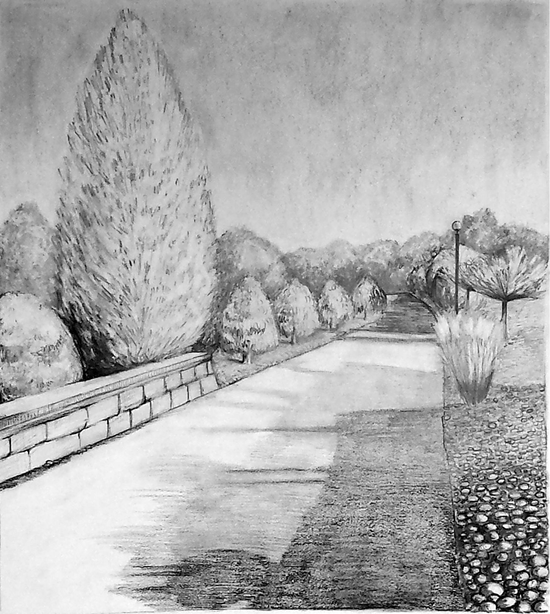
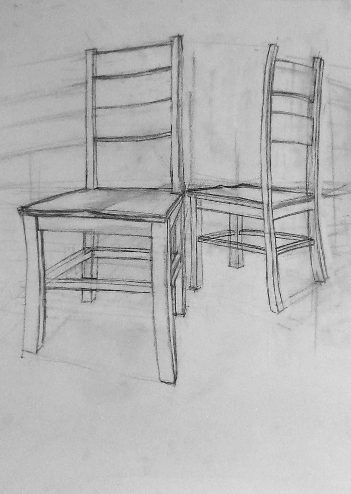
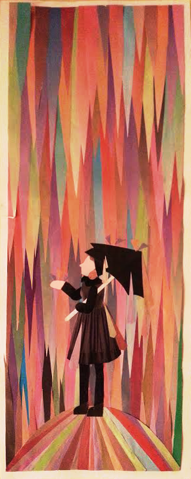
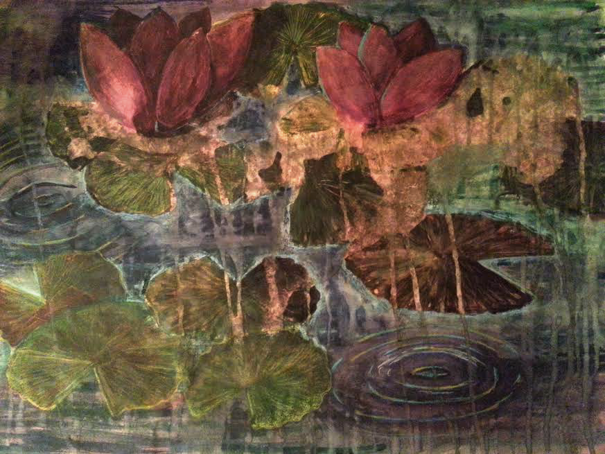

| Graphite Portfolio |
| Mixed Media Portfolio |
Graphite Portfolio
 |
Basic Drawing Final ProjectFall 2015 - A pencil study of my school desk at night time with my desk lamp on. Chosen as an experiment with very dark shadows and harsh light. |
Basic Drawing Project 7: Figure DrawingFall 2015 - The assignment was to draw a classmate as they draw another classmate. |
 |
 |
Basic Drawing Project 6: Self-PortraitFall 2015 - The assignment was a simple self-portrait. This is the single closest image I have drawn of myself. In fact, I passed someone on campus who recognized me from the artwork after seeing the piece first. |
Basic Drawing Project 5: EquirectangularFall 2015 - The assignment was to draw all 180 degrees around you while sitting in a stairway, such that the finished artwork resembles a panoramic view of the hallways. Select this link to watch the panoramic view of the same sketch, created as a way to replicate the view I had as I was drawing this piece. |
 |
|  | Basic Drawing Project 4: LandscapeFall 2015 - Assignment was to practice shading and values with an organic subject (as opposed to the inorganic subjects from the prior two projects). This is the view from one of the pathways on the RPI campus. It is located just adjacent to the freshman dorms and the student union. |
Basic Drawing Project 3: Still LifeFall 2015 - Still life of an assortment of kitchenware set on a table. This is the second piece for this assignment that I submitted. |
 |
 |
Basic Drawing Project 3: Still LifeFall 2015 - Still life of an assortment of kitchenware set on a table. This is the first piece for this assignment that I submitted. |
Basic Drawing Project 2: PerspectiveFall 2015 - The assignment was presented to practice drawing non-linear objects (i.e. boxes) in perspective. This is the first of two chair pieces I created for this assignment, the other of which is with the art professor as an example for future classes. |
 |
 |
Perspective ExerciseOctober 2012 - Perspective drawing of a pencil sharpener. |
Perspective ExerciseOctober 2012 - Perspective drawing of a stapler. |
 |
Mixed Media Portfolio
|  | Collage ProjectMarch 2013 - This collage was constructed using the color-coded edges of a hardware supplies catalog to create a rain effect. The girl with the umbrella was made using various ads and colors in the same catalog. |
Tiled Background ProjectFebruary 2013 - A repeating tile pattern featuring leaves and water droplets. The objective was to create a design that was tiled three times over a long sheet of paper. I cheated by not having the raindrops on the leaves perfectly tesselate over the image to give it that flawed, natural look. Drawn and colored entirely with Prismacolor Colored Pencils. |
 |
|  | Watercolor ProjectDecember 2013 - Painting of water lilies with watercolor and pencil. My technique with the watercolor resulted in the piece being much darker than the other counterparts my classmates made. Some experimental effects were done to add a feeling of washed out to the final piece. |